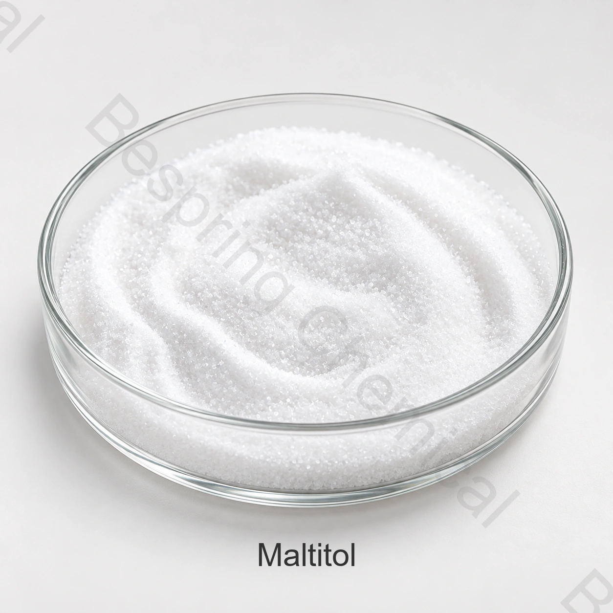

Crystalline polyol · Bulking sweetener · E965(i) / INS 965(i)
Food Grade Crystalline Maltitol
Maltitol is a crystalline polyol used for sweetness, bulk, humectancy and texture in permitted foods. This page addresses crystalline maltitol E965(i); maltitol syrup E965(ii) is a different, multi-polyol product and requires a separate specification.
State crystalline or syrup form, application, solids target, quantity, destination and claims.

Form identifiedCrystalline E965(i), not syrup E965(ii)
Basis declaredAs-is versus anhydrous results
Crystallization testedProcess and shelf-life behavior
Claims reviewedFinished-food rules, not ingredient shorthand
Product identity
What is crystalline maltitol E965(i)?
Maltitol is alpha-D-glucopyranosyl-1,4-D-glucitol, produced by hydrogenating maltose. JECFA describes it as a white crystalline powder, very soluble in water and functional as a sweetener, humectant, stabilizer and bulking agent.
The ≥98% assay shown here is an independent JECFA/EU identity reference, not a published Bespring sale specification. Commercial acceptance must use the current source-specific specification and shipment COA.
The first sourcing decision
Crystalline maltitol and maltitol syrup are not interchangeable
E965(i)
Crystalline maltitol
Primarily D-maltitol, with public criteria of ≥98% on anhydrous basis. Useful where a high-purity crystalline solid, controlled particles and reproducible dry solids are required.
Confirm maltitol assay and water
Control reducing sugars and other polyols
Specify particle distribution and flow
E965(ii)
Maltitol syrup
A mixture of maltitol, sorbitol and hydrogenated oligo- and polysaccharides, supplied as syrup or solid material. Its dry solids, polyol profile and viscosity govern performance.
Confirm dry substance and maltitol fraction
Review sorbitol and higher saccharides
Specify viscosity at temperature
Page boundaryThe sale inquiry and technical guidance on this page target crystalline maltitol. If you need maltitol syrup, request INS 965(ii) explicitly and do not apply the crystalline specification or dose calculation.
Application-specific behavior
How crystalline maltitol functions in food systems
Legal use, claims and labelling vary by destination. These are trial areas—not universal permissions, use levels or performance guarantees.
Hard & chewy confectionery
Balance solids, cooking profile, glass transition or crystallization, stickiness, moisture pickup, chew and storage stability.
Chocolate & fat-based fillings
Control particle size, refining behavior, viscosity, cooling effect, tempering interactions, bloom and sensory balance.
Bakery products
Rebalance water, bulk, spread, browning, crumb, softness and shelf life; maltitol does not reproduce every sucrose function automatically.
Desserts & compound systems
Evaluate sweetness profile, freezing or texture effects, viscosity, other sweeteners, hydrocolloids and flavor release.
Replacing sugar is a system redesign
Control sweetness, bulk, water and crystallization together
01
Sweetness architecture
Run sensory testing in the finished matrix. Sweetness intensity, onset, persistence and cooling perception depend on concentration and co-sweeteners.
02
Solids & mass balance
Replace sucrose on functional solids—not sweetness alone. Recalculate water, fat, starch, cocoa, fibers and other bulking agents.
03
Water activity & humectancy
Measure moisture sorption, water activity and texture over shelf life. A polyol's humectancy does not itself prove microbial stability.
04
Crystallization control
Map dissolution, supersaturation, cooling, agitation, seed formation and storage temperature to prevent unwanted grain or stickiness.
Minimum useful comparisonCompare the sucrose control and candidate formulation at equal finished-product targets. Record solids, water activity, viscosity, texture, color, sweetness/time profile, cooling effect and stability under intended packaging.
Specification architecture
What to verify on a crystalline maltitol specification
No source-specific numerical specification was available for this page. The checklist avoids converting public standards into unsupported Bespring guarantees.
Maltitol name, CAS 585-88-6, INS/E 965(i), manufacturing source
Prevents confusion with maltitol syrup or a polyol blend
Assay & basis
D-maltitol limit, method, as-is/anhydrous basis and water method
Enables valid purity, dose and price comparison
Polyol profile
Sorbitol and related polyhydric alcohols with method
Secondary polyols can affect crystallization and sensory behavior
Reducing sugars
Limit, expression basis and analytical method
Relevant to purity and heat/color reactions
Solution quality
Color/clarity, conductivity, pH where specified and test concentration
Methods must match for meaningful comparison
Physical properties
Particle distribution, bulk density, flow and caking criteria
Affects feeding, dissolution, refining and blend uniformity
Purity & microbiology
Nickel, lead and destination/customer-required controls
Hydrogenation and food-risk controls require source evidence
Documents & claims
COA, TDS, SDS, allergen/GMO/origin, certificates and change control
Supports source qualification and finished-label review
Why nickel belongs in the review
Maltitol is manufactured by catalytic hydrogenation. Public JECFA and EU purity criteria include a nickel limit, so buyers should confirm the source-specific method, limit and batch reporting rather than checking only maltitol assay.
Claims and consumer information
Ingredient identity does not automatically support “sugar-free” or health claims
Sugar-free / no added sugar
Determine eligibility from the complete finished-food composition and local definitions. Maltitol use alone does not establish either claim.
Energy & carbohydrate
Use destination-market energy factors and nutrition-labelling rules. Sugar alcohol products can still contain calories and carbohydrate.
Blood glucose & dental claims
Do not publish glycemic, diabetic-suitability or tooth-friendly claims without the required finished-product evidence and jurisdictional authorization.
Digestive tolerance
Review serving size, total polyols, target population and mandatory/advisory labelling. Avoid universal tolerance assurances.
Authoritative references
Verify identity, purity and permitted use separately
FAO/WHO JECFA
Defines maltitol as CAS 585-88-6, INS 965, ≥98% assay and lists its technological functions.
Technical content reviewed against the cited sources and current search results on 22 August 2026. Reconfirm current regulations for the exact product and destination.
Polyol comparison
Choose a polyol system by the finished product
Sorbitol
Compare form, humectancy, crystallization, cooling, sweetness and application-specific tolerance.
Protect crystalline maltitol from moisture and caking
Keep sealedProtect opened material from humidity, contamination and odours.
Follow source conditionsUse the current label, specification and SDS for storage and shelf life.
Control dustApply hygienic handling and task-appropriate workplace controls.
Retain lot identityMaintain traceability and suitable stock rotation.
Buyer questions
Maltitol FAQ
What is the difference between maltitol and maltitol syrup?
Crystalline maltitol E965(i) is primarily D-maltitol and has a high-purity crystalline identity. Maltitol syrup E965(ii) is a mixture containing maltitol, sorbitol and hydrogenated oligo- and polysaccharides. Their specifications and process behavior differ.
What is the maltitol assay for the Bespring grade?
No commercial value is published here. The ≥98% value is a JECFA/EU public identity reference. Request Bespring's current source-specific specification, method and batch COA.
Is maltitol as sweet as sugar?
Sweetness is formulation-dependent and should be evaluated sensorially at the actual concentration with the complete flavor and sweetener system. It should not be treated as a universal one-for-one sucrose replacement.
Can maltitol be used in sugar-free chocolate?
It can be evaluated as a bulk sweetener, but particle size, refining, fat demand, viscosity, cooling, flavor and local sugar-free claim criteria must all be validated in the finished product.
Does maltitol have a laxative effect?
Digestive response depends on intake, total polyols and the individual. Review serving size and the destination market's warning or advisory labelling requirements rather than making universal tolerance claims.
What should a maltitol RFQ include?
State crystalline E965(i) or syrup E965(ii), application, required assay and basis, particle or viscosity needs, quantity, packing, destination, claims and certificates.
Form-specific sourcing
Request a crystalline maltitol specification and quote
Define the form and process requirements so sales can provide the relevant grade and documents.